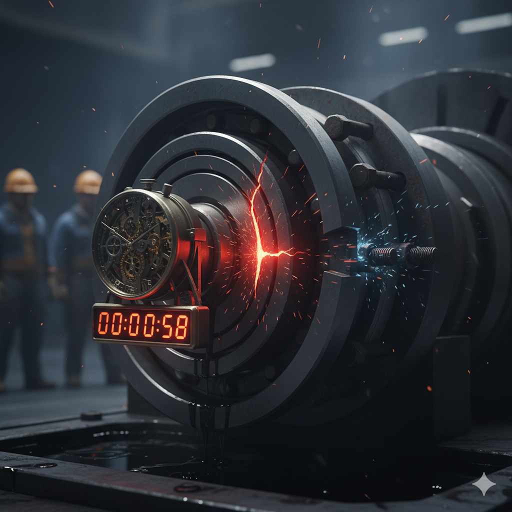

The global problem in mechanical maintenance is not a matter of isolated failures, but a systemic lack of a proactive maintenance culture. The traditional reliance on reactive maintenance is the direct cause of most critical long-term costs.
1. Relevant Statistics and General Data
Understanding these statistics is the first step toward risk mitigation:
- 70–80% of mechanical equipment failures can be attributed to inadequate maintenance.
- The service life of critical components can be shortened by 50–70% if adequate lubrication and alignment are not performed.
2. Holistic Problem Breakdown
The biggest problem is not that parts wear out, but that the root causes of that wear are often ignored.
A. Initial Problems (Root Causes)
- Assembly and Installation Errors: Errors such as poor shaft alignment become a "ticking time bomb."
- Electrical Factors: Problems with grounding lead to electro-erosion on bearings.
The Critical Human Factors:
- Reactive vs. Proactive Culture: A culture prioritizing short-term savings guarantees expensive failures.
- The Cost of Inexperience: Savings from cheaper labor are instantly overshadowed by repair costs.
Conclusion for Hydropower Plant Owners
My strength lies not just in fixing a failure, but in identifying the holistic root cause that led to it.
Your investment in early, comprehensive expert integrity
is the only guarantee against costly failures.
CONNECT WITH OUR EXPERTISE